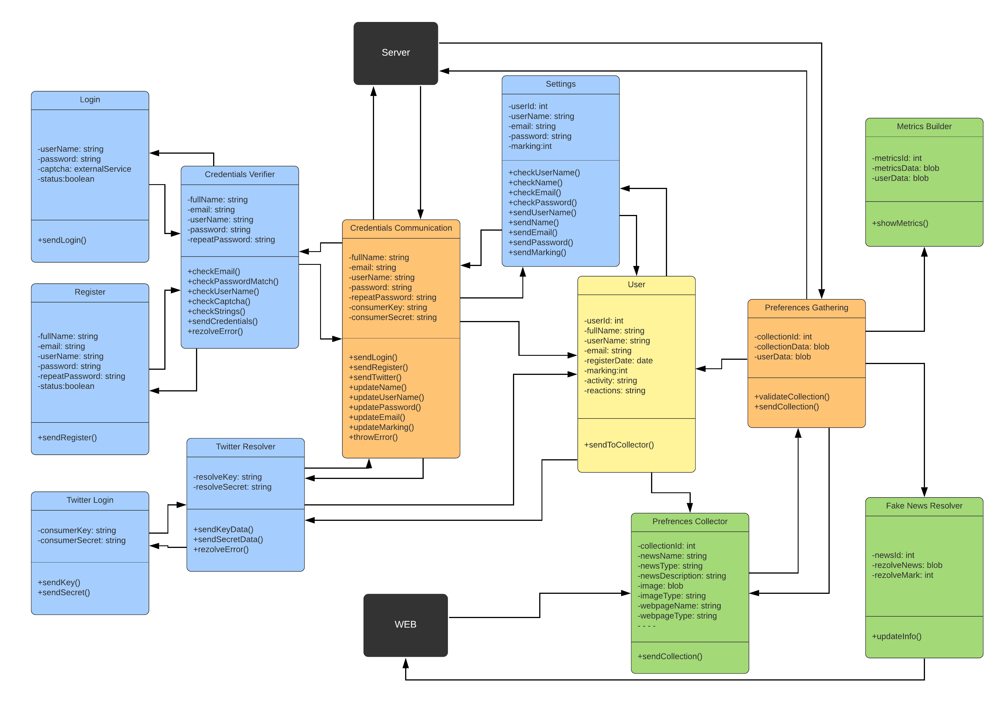
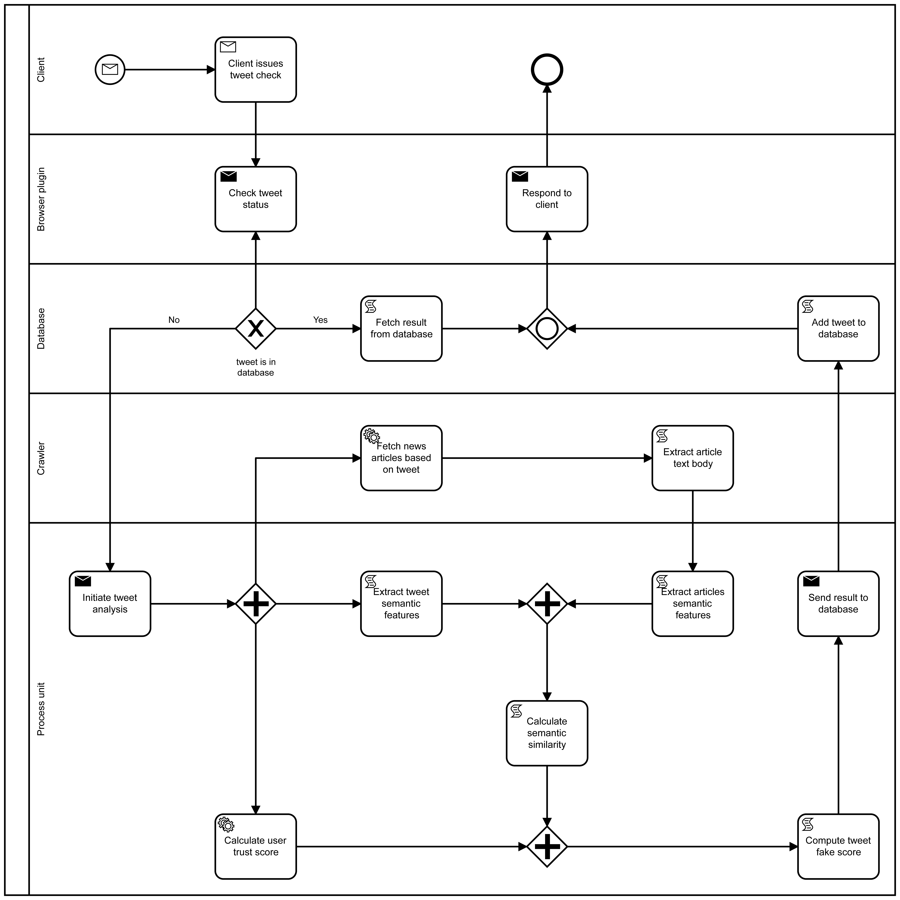
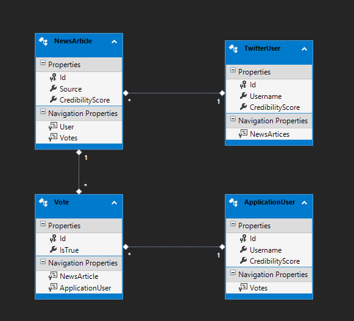
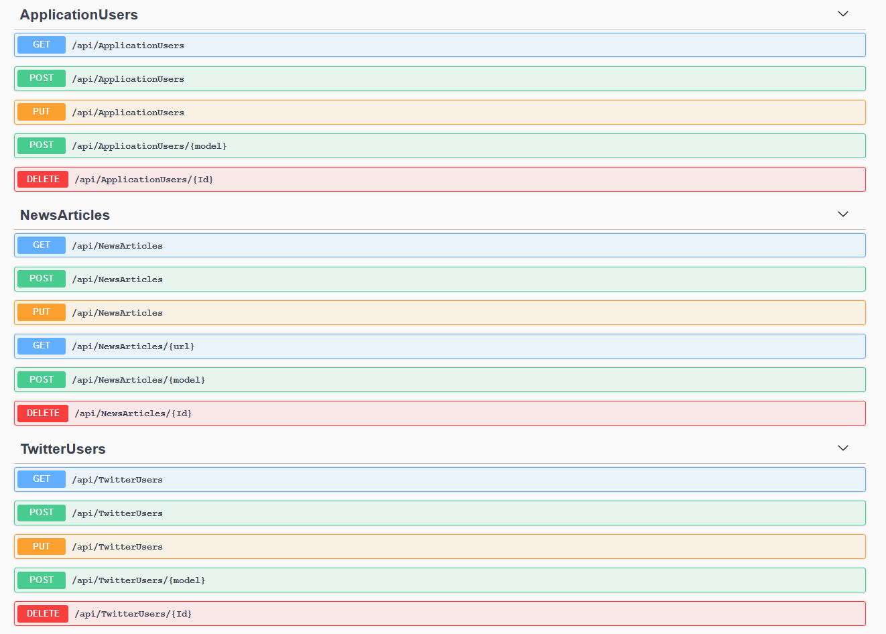

Community Draft
The project aims to detect fake news from the Twitter platform using modern technologies such as machine learning and SPARQL to verify the credibility of the content of a news story. The project is divided into several modules that will be described below.
The problem consists into problems which are visible every day when we are navigating on twitter. That problem is that we deal with lots of fake news and fakes user. Our scope with this project is to determine the probability of a user to be fake or not.
Another problem would be that there aren’t almost any real time detection tools which could do this for a home user which is browsing the web. Most of the tools on the web need an insane amount of time to do semantic analysis over that topic or to analyze the comments, reactions and other types of forms a user has over a unique post. This kind of tools aren’t actually a good tool for fake news which are starting from multiple sources at the same time making a web explosion of fake news over twitter especially.
All information will be collected from twitter via api (posts, user information (number of posts, followers, account creation date, etc.). We will also have user profiles built (characterized by details about the user, user activity, reactions of other users to what he does on the network, etc.) All this information will be used in order to have:
- A metric will be proposed to calculate the credibility of a post
- A metric will be proposed for credibility of a user
All the available metainformation should be taken into consideration. Also, we should have a list of fake users centralized in order to get a better response, after the front-end is putting the user in a category. Resources should be centralized in order to get faster responses for already processed news. Resources will be used outside the Twitter network to validate the information (Google, blogs, newspapers, etc.) via a crawler in order to see if the information from the post/user and their metric can be considered trustful. Fronted will be able to show extra information about metrics also it should be able to edit the strictness level for marking news with the possibility of being fake or not. Fronted will show analyzed resources. User will also be able to mark a post as fake manually.
Our fronted is made via a chrome extension which allow us to add functionality to the Chrome web browser without diving deeply into native code. Fake news browser extension was built with core technologies that web developers are very familiar with - HTML, CSS, and JavaScript. The only thing different from classic web pages are functionality to Chrome through some of the JavaScript APIs that Chrome exposes. Fake news extension was also created to work only on certain pages through the use of Page Actions, it can run code in the background using Background Pages, and can even modify an existing page loaded in the browser using Content Scripts. Also, a manifest.json file was created to tell Chrome important information about extension, like its name and which permissions it needs. Also, the extension is made of different, but cohesive, components. Components include background scripts, content scripts, UI elements and various logic files. The following modules that are linked together to create a service-oriented architecture that can be scaled in the future.
Our backend was composed via multiple tentatives and we tried to include all classes from advanced software engineering techniques into it, so it may be considered our playground. We have started with the methodology being a model driven development one. Then with the architecture n tier pattern which was done with model first entity framework and database first with entity framework core in order to stay in our methodology grounds. The backend is a restful api which respects all SOLID principles and it is secured via authentication and authorization having multiple keys and rights. It is also secured having a token for each user generated. The deployment is done into Azure cloud due the fact that is a very friendly environment which supports also CI/CD in order for us to be able to build and deploy faster. Also, we were thinking to go from GitHub to the VSTS platform due the fact that is easier to follow all tasks assigned with repos and with pipelines for CI/CD and test plans. Our architecture is service oriented and we use in our project python, JavaScript and C#. You can find more details about this into this BPMN.
The backend cache module is responsible for the delivery of the cached/processed data to the frontend. The browser extensions is sending various requests to the cache module performing CRUD operations on the entities, mainly read requests on the news article entity. The news article instances are uniquely identified by their uri. For each article that cannot be found in the cache the caching module is calling the processing module storing the result in the cache.
Process Unit is a server that receives requests with twitter URL Based on a tweet, we can extract the text content and query Google with the tokenized (cleaned up) text. We find articles from which we extract the body and compare semantically with the tweet. We average with all the results found and that's the score.
The crawling service is a simple python script which is able to crawl the google with the scope of finding articles which could contain interest keys for us. Then those links are saved and they are opened in parallel in order to crawl them as well and see if that information is or not of any help in our process unit. We also use google api.
The scrapper for twitter (* requires developer account for API keys, * runs non-stop by searching for certain keywords) is able to save data in mongo collections about user, text, date of post, number of likes, retweets, if it was posted as a response, but also data about user. It’s exporting from mongo a json which is then used in a Redis queue with the scope of being processed with multithreading. On its part we are also using a Bayes and other ML algorithms to see if the tags like emails or other things match with our keywords needed. Also, this API allows us to give a credibility log. Score over the users in terms of fakeness.
Some important things that didn’t come along as expected with this module it would be that:
In order to implement this, we used modules for:
All our presented modules are designed with aspect-oriented programming and monitoring oriented programming in mind, also for critical paths we developed functional testing (unit testing) and from non functional perspective we created a collection in postman. In order to have the project in the current form we did a lot of refactoring. Now almost everything is decupled and can be replaced with anything.
Comparing our solution with others it isn’t the best from our minimal tests till now, from the point of metrics resulted not architecture, an attached annexes which will come will describe this study with more statistics, but from our tests we can only get high confidence of a fake news only when we have some more information about it and the text is on other safe sources already.
The database was generated through entity framework using model first technique. Entities were then generated from the database using entity framework core. The CRUD operations are applied to them from API through the service layer. Also we can generate entities doing migrating.
Representation of the model used by the API. For more details here.
Application user model schema:
"ApplicationUserViewModel": {
"required": [
"username"
],
"type": "object",
"properties": {
"id": {
"type": "integer",
"format": "int32",
"nullable": true
},
"username": {
"type": "string",
"nullable": true
},
"credibilityScore": {
"type": "integer",
"format": "int32",
"nullable": true
}
},
"additionalProperties": false
}
Application user filtering schema:
"ApplicationUserFilterViewModel": {
"type": "object",
"properties": {
"filterByUsername": {
"type": "string",
"nullable": true
}
},
"additionalProperties": false
}
Twitter article news schema:
"NewsArticleViewModel": {
"required": [
"credibilityScore",
"source",
"userId"
],
"type": "object",
"properties": {
"id": {
"type": "integer",
"format": "int32",
"nullable": true
},
"source": {
"type": "string",
"nullable": true
},
"credibilityScore": {
"type": "integer",
"format": "int32",
"nullable": true
},
"userId": {
"type": "integer",
"format": "int32"
}
},
"additionalProperties": false
}
Twitter article filtering schema:
"NewsArticleFilterViewModel": {
"type": "object",
"properties": {
"filterBySource": {
"type": "string",
"nullable": true
},
"filterByUserId": {
"type": "integer",
"format": "int32",
"nullable": true
},
"filterByUrls": {
"type": "array",
"items": {
"type": "string"
},
"nullable": true
}
},
"additionalProperties": false
}
Twitter user schema:
"TwitterUserViewModel":{
"required":[
"username"
],
"type":"object",
"properties":{
"id":{
"type":"integer",
"format":"int32",
"nullable":true
},
"username":{
"type":"string",
"nullable":true
},
"credibilityScore":{
"type":"integer",
"format":"int32",
"nullable":true
}
},
"additionalProperties":false
}
Twitter user filtering schema:
"TwitterUserFilterViewModel": {
"type": "object",
"properties": {
"filterByUsername": {
"type": "string",
"nullable": true
}
},
"additionalProperties": false
}
Representation of a response sent by twitter api, more details here.
{
"created_at": "Thu Oct 10 13:47:05 +0000 2019",
"id": 1182291461934583813,
"id_str": "1182291461934583813",
"text": "@ZoltyqOfficial @FloridaMichaelM Impeachable conduct is whatever the American people say it is. Donald Trump Boss b\u2026 https://t.co/BYDWIqP4dj",
"truncated": true,
"entities": {
"hashtags": [],
"symbols": [],
"user_mentions": [
{
"screen_name": "ZoltyqOfficial",
"name": "MessengerPigeon // Matthew",
"id": 4302251596,
"id_str": "4302251596",
"indices": [
0,
15
]
},
{
"screen_name": "FloridaMichaelM",
"name": "Michael Morris",
"id": 3237186386,
"id_str": "3237186386",
"indices": [
16,
32
]
}
],
"urls": [
{
"url": "https://t.co/BYDWIqP4dj",
"expanded_url": "https://twitter.com/i/web/status/1182291461934583813",
"display_url": "twitter.com/i/web/status/1\u2026",
"indices": [
117,
140
]
}
]
},
"source": "Twitter for Android",
"in_reply_to_status_id": 1182290046881325056,
"in_reply_to_status_id_str": "1182290046881325056",
"in_reply_to_user_id": 4302251596,
"in_reply_to_user_id_str": "4302251596",
"in_reply_to_screen_name": "ZoltyqOfficial",
"user": {
"id": 932315684,
"id_str": "932315684",
"name": "Aquamayne",
"screen_name": "Texasinplay",
"location": "",
"description": "",
"url": null,
"entities": {
"description": {
"urls": []
}
},
"protected": false,
"followers_count": 36,
"friends_count": 109,
"listed_count": 1,
"created_at": "Wed Nov 07 15:35:40 +0000 2012",
"favourites_count": 2436,
"utc_offset": null,
"time_zone": null,
"geo_enabled": false,
"verified": false,
"statuses_count": 259,
"lang": null,
"contributors_enabled": false,
"is_translator": false,
"is_translation_enabled": false,
"profile_background_color": "C0DEED",
"profile_background_image_url": "http://abs.twimg.com/images/themes/theme1/bg.png",
"profile_background_image_url_https": "https://abs.twimg.com/images/themes/theme1/bg.png",
"profile_background_tile": false,
"profile_image_url": "http://pbs.twimg.com/profile_images/1166122176329736192/z9YkVO3E_normal.jpg",
"profile_image_url_https": "https://pbs.twimg.com/profile_images/1166122176329736192/z9YkVO3E_normal.jpg",
"profile_banner_url": "https://pbs.twimg.com/profile_banners/932315684/1566860234",
"profile_link_color": "1DA1F2",
"profile_sidebar_border_color": "C0DEED",
"profile_sidebar_fill_color": "DDEEF6",
"profile_text_color": "333333",
"profile_use_background_image": true,
"has_extended_profile": false,
"default_profile": true,
"default_profile_image": false,
"following": false,
"follow_request_sent": false,
"notifications": false,
"translator_type": "none"
},
"geo": null,
"coordinates": null,
"place": null,
"contributors": null,
"is_quote_status": false,
"retweet_count": 0,
"favorite_count": 0,
"favorited": false,
"retweeted": false,
"lang": "en"
}
We identified 2 metrics:
We identified three main objectives which can be pursued in order to greatly improve the overall robustness of our project:
This browser extension can be used by any user regardless of age, emphasizing a minimalist design and easy to use. In order to be easy to download, the extension will be added to the market used by Google. A material design was chosen to streamline the user interaction. Also the colors used for the badges on twitter express the visibility of fake news.
The api documentation was generated using swagger preview version which we adapted to the .NET Core 3.0 version. Also the documentation is available here.
